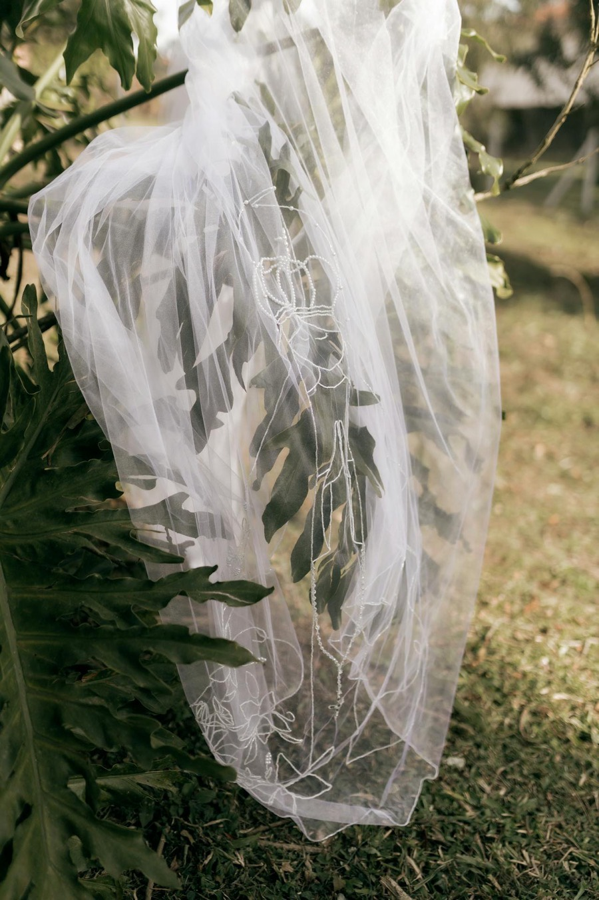
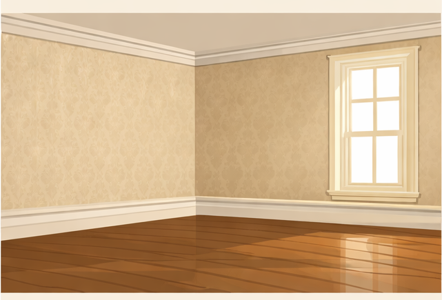
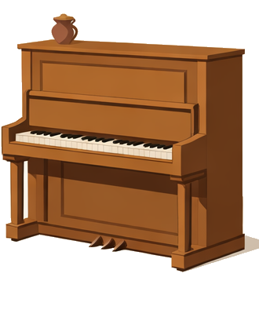
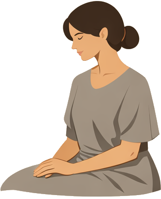
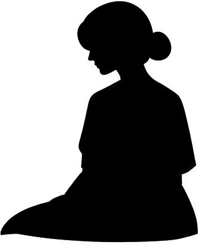

思考実験
もし自分の性別も、才能も、親の収入も知らないまま社会の仕組みを選ぶとしたら——あなたは何を選ぶだろうか。
『正義論』（A Theory of Justice）刊行
同年の世界：ニクソン・ショックで戦後ブレトンウッズ体制が終焉。米中「卓球外交」、キッシンジャー極秘訪中で冷戦の地図が書き換わる。
ジョン・ロールズはハーバード大学の哲学者。20世紀で最も影響力のある政治哲学書の著者とされる。
会社の飲み会で席順を決めるとき、自分が末席になるかもしれないと思った瞬間、急に「くじ引きにしませんか」と言いたくなる。引っ越し先を探すとき、隣人がどんな人か分からないだけで、防音性能を気にし始める。
私たちは「自分がどの立場に置かれるか分からない」と感じた途端、ルールに厳格になる。有利な立場にいるときには気にもしなかった公平さが、急に切実な問題として浮かび上がる。
1971年、哲学者ジョン・ロールズはこの心理を思考実験に昇華した。自分が誰であるかを一切知らない状態で社会を設計せよ。「無知のヴェールヴェール（veil）
もともとは顔や頭を覆う薄い布のこと。花嫁が式でかぶる白い布や、中東の女性がまとう頭巾も同じ語。ここでは比喩として、自分が何者かを自分から見えなくする「遮蔽物」の意味で使われる。」と呼ばれるその装置は、公正さの条件を根本から問い直す。
自分の立場を知らないまま社会制度を選ぶ体験を通じて、「公正さ」がどこから来るのかを考える。あなたの選択は、あなた自身について何かを語るかもしれない。

「正義とは何か」という問いは、哲学の歴史とほぼ同じだけの年月を持つ。プラトンは『国家』プラトン『国家』（紀元前380年頃）
古代ギリシアの哲学者プラトン(前427–前347)の主著。師ソクラテスを主人公とする対話篇で、「正義とは何か」「理想の国家とはどのようなものか」を10巻にわたって論じた。哲人王による統治、魂の三区分、有名な「洞窟の比喩」などが展開される、西洋政治哲学の源流。でこの問いを正面から扱い、アリストテレスアリストテレス（前384–前322）
古代ギリシアの哲学者。プラトンの弟子で、アレクサンドロス大王の師。論理学・倫理学・政治学・自然学など、学問の基本形をほぼすべて作った。『ニコマコス倫理学』で正義を体系的に論じた最初の人物。は「各人にふさわしいものを」「各人にふさわしいものを」
アリストテレスの配分的正義の原則(『ニコマコス倫理学』第5巻)。能力・功績・貢献の度合いに応じて分配するのが正義だ、という考え方。「平等な人には平等に、不平等な人には不平等に」と要約される。ロールズの「最下層を優先する」とは真逆の方向を向いている。と答えた。しかし近代に入ると、問いの立て方そのものが変わる。ホッブズトマス・ホッブズ（1588–1679）
イギリスの政治哲学者。主著『リヴァイアサン』(1651)で、人間の自然状態を「万人の万人に対する闘争」と描き、そこから抜け出すために人々が自由を国家に委ねる——という近代社会契約論の原型を示した。は人間を「万人の万人に対する闘争」の中に置き、恐怖からの脱出として社会契約論社会契約論（Social Contract Theory）
ホッブズ、ロック、ルソーらが展開した政治哲学の伝統。人々は「自然状態」から抜け出すために互いに契約を結び、国家や社会の正当性を根拠づけるという考え方。を構想した。ロックジョン・ロック（1632–1704）
イギリスの哲学者。『統治二論』(1689)で、生命・自由・財産は誰にも奪えない「自然権」であると論じた。国家はこの自然権を守るための契約で成立するとし、アメリカ独立宣言の思想的基盤となった。は自然権を、ルソージャン＝ジャック・ルソー（1712–1778）
フランスの哲学者。『社会契約論』(1762)で、個々人の利害を超えた共同体全体の総意を「一般意志」と呼んだ。フランス革命の思想的支柱となり、近代民主主義の核をなす概念を生み出した。は一般意志を持ち出した。だが20世紀半ばになっても、「公正な社会の仕組みを、どうやって導き出すか」という問いには、誰もが納得する答えがなかった。1971年、ハーバード大学の哲学者ジョン・ロールズが、その沈黙を破る。
ロールズが考案した装置は原初状態原初状態（Original Position）
ロールズが考えた仮想の出発点。社会のルールを決める人々が、自分の属性を一切知らない状態で議論する場のこと。社会契約論の「自然状態」に対応する。と呼ばれる。想像してほしい。社会のルールを決める会議室に、あなたを含む全員が座っている。ただし、ここには特殊な条件がある。誰も自分が何者であるかを知らない。性別、年齢、才能、資産、健康状態、人種、宗教——すべてが「無知のヴェール」の向こうに隠されている。この状態で、全員が合意できる社会の仕組みを選ぶ。それがロールズの思考実験だ。
ヴェールが隠すのは個人の属性だけではない。「善き生とは何か」という価値観そのものも遮断される。残されるのは、合理的に考える力と、正義への一般的な関心、そして社会の基本構造についての知識だけだ。ロールズはこの状態で合理的な人間が選ぶ原理を導き出そうとした。その結論がマキシミンマキシミン（Maximin）
ゲーム理論の意思決定ルール。最悪のシナリオが最もマシになる選択肢を選ぶ戦略。「最小値を最大化する」の略。ロールズはこれが合理的だと主張した。戦略——最も不遇な立場にある人の状態を最大限に改善する社会を選ぶ——だった。
ヴェールの向こうに消えるのは、生まれた国、性別、親の収入、才能——私たちが普段、有利にも不利にも使っている条件のほとんどだ。残るのは、論理的に考える力と、公正への一般的な関心だけ。この極端な簡素化を提案した人物は、戦後アメリカで最も影響力のある政治哲学者になった。
ハーバード大学教授。1971年に『正義論』を刊行し、20世紀後半の政治哲学を一変させた。第二次世界大戦に従軍し、広島の焦土を目撃した経験が、のちの「公正としての正義」の思想に影を落としている。寡黙で控えめな人柄だったが、その著作の影響力は計り知れない。
"Justice is the first virtue of social institutions, as truth is of systems of thought."
正義は社会制度の第一の徳である。真理が思考体系の第一の徳であるように。
— John Rawls『A Theory of Justice』(1971) 冒頭
この一文から、戦後政治哲学の潮目が変わった。それまで主流だった功利主義——「最大多数の最大幸福」——では、少数者が踏みにじられる余地があった。ロールズはそこに待ったをかけ、まず公正さから始めようと提案した。本文に入る前に、この記事で繰り返し登場する5つの語を整理しておく。
| 概念 | 意味 | この記事での位置づけ |
|---|---|---|
| 原初状態 | 社会のルールを決める仮想の出発点 | 思考実験の舞台設定 |
| 無知のヴェール | 自分の属性を知らない状態にする装置 | 公正さを担保する鍵 |
| 格差原理 | 不平等は最下層の利益になる限りで許容 | ロールズが導き出した結論 |
| マキシミン | 最悪の最大化。最下層が最もマシな選択肢を選ぶ | ロールズの推論の根拠 |
| 期待効用 | 確率で重みづけした平均的な利益 | ハルサーニの対抗理論 |
概念が整ったところで、先回りして誤読をつぶしておきたい。「無知のヴェール」は提案されて半世紀、誤解と批判の両方を浴び続けてきた思想である。ありがちなつまずきを先に片付けておくと、このあと実際に体験する思考実験の意味が、ぐっと鮮明になる。
✗ よくある誤解
無知のヴェールは「全員が平等な社会」を主張している
✓ 実際は
ロールズは完全な平等を求めていない。不平等は、最も不遇な人の状態を改善する限りで許容される（格差原理）。ポイントは「どんな不平等が正当化できるか」の基準を示したこと。
✗ よくある誤解
これは実際に人々を集めて合意を取る手続きだ
✓ 実際は
原初状態は仮想の思考実験。実際に人を集める必要はない。「もし完全に公平な立場で考えたら何を選ぶか」を問うための装置であり、民主的な投票とは異なる。
✗ よくある誤解
ロールズの理論は誰からも支持されている
✓ 実際は
リバタリアン（ノージック）リバタリアニズム（Libertarianism）
個人の自由と最小国家を最も重視する政治思想。所有権に基づく自由な交換から生じた格差は正義だとし、所得再分配を原則として否定する。ハーバードの同僚ロバート・ノージック(1938–2002)が『アナーキー・国家・ユートピア』(1974)で、ロールズへの最も有名な反論を展開した。、コミュニタリアン（サンデル）コミュニタリアニズム（Communitarianism）
共同体のなかで培われた価値・絆・伝統を、個人の自由より優先する政治思想。マイケル・サンデル(1953–)が代表。ロールズの「属性から切り離された抽象的個人」という前提そのものを、「そんな人間は現実に存在しない」と批判した。、功利主義者（ハルサーニ）功利主義（Utilitarianism）
「最大多数の最大幸福」を目指す倫理学の立場。19世紀のベンサム・ミルに始まり、ハルサーニ(1920–2000、1994年ノーベル経済学賞)がゲーム理論で洗練させた。全体の幸福総和を優先するため、少数者が犠牲になりうる点をロールズは強く批判した。から激しく批判されている。現代政治哲学の「最も偉大な、そして最も論争的な」著作とされる。
ここから先は、あなた自身がロールズの原初状態に入る。自分の性別も、才能も、親の収入も知らない。その状態で社会の仕組みを選んでほしい。正解はない。あなたが何を選ぶかが、あなた自身の正義の感覚を映し出す。
まずは、ヴェールが何を隠すのかを見ておこう。下の人物は、あなた自身だと思ってほしい。スライダーを引くほど、あなたが自分について知っていることが一つずつ失われていく。




あなた自身について、分からなくなっていく属性
ヴェールの深さ: 0 / 5 — 自分の属性がすべて見えている。自分が何者か、完全に知っている状態。
ロールズの原初状態では、あなた自身がこれらの属性（およびそれ以上）を一切知らないまま社会を設計する。自分が裕福か貧しいか、男か女か、どんな才能を持っているのかも分からない。知っているのは「合理的に考える力」と「正義への関心」だけだ。だから、どの立場に転んでも耐えられるルールを選ばざるを得なくなる——これがロールズの仕掛けの核心。
属性がすべて隠された状態で、今度は実際に社会を選ぶ。次の4つの社会のうち、あなたはどれを選ぶだろうか。
あなたの属性は不明。上位10%かもしれないし、下位10%かもしれない。
どの社会で暮らしたいか、1つ選んでください。
スコアは架空の「生活満足度指数」。実際の社会は無数の変数で構成されるが、ここではロールズの議論の核心——最下層の処遇——に焦点を絞っている。
どんな結果になっただろうか。あなたの選択は、ロールズが「合理的な人間ならこう選ぶはずだ」と想定した答えと同じだっただろうか。1987年、フロリッチとオッペンハイマーは大学生を使って同じ実験をした。ロールズの予想に反して、マキシミン（社会D）を選んだのは全体の5%未満だった。多くの学生は「最低保証つきの平均最大化」——つまり最下層にフロアを設けたうえで平均を上げる方針——を選んだ。格差原理格差原理（Difference Principle）
ロールズの正義の第二原理の一部。社会的・経済的な不平等は、最も不遇な立場にある人々の利益を最大にする場合にのみ正当化される、という考え方。は理論としては美しいが、人間の直感はもう少し複雑な場所にあるらしい。
あなたはどこまでヴェールをかぶれるか？
ロールズの思考実験に入るには、自分の属性をいったん手放す必要がある。
以下の7つについて、「もしこれを一瞬だけ『持っていない自分』と想像できるか」を5段階で答えてください。
サンデルの批判は『リベラリズムと正義の限界』(1982)に詳しい。「自分を属性から切り離せる」というロールズの前提そのものを問い直した。
ヴェールの下で「合理的な人間は何を選ぶか」をめぐって、3つの立場が激突する。ロールズはマキシミン（最悪の最大化）を主張したが、ハルサーニは期待効用期待効用（Expected Utility）
ある選択肢の「うまみ」を、起こりうる結果の良さとその確率を掛け合わせて計算したもの。宝くじの期待値と同じ発想で、意思決定理論の基本概念。最大化を、フロリッチらは実験で「フロア付き平均最大化」を示した。
図にカーソルを当てると、各戦略の注目する部分がふわりと浮き上がる。マキシミンは下位だけを見、期待効用は全体を平均で見、フロア付き平均は下限と平均の両方を見る——「合理的」の意味が3通りあることが視覚化される。
3つの立場を詳しく
ロールズの論理——なぜマキシミンか
最悪に備える合理性
ヴェールの下では確率を計算できない——これがロールズの主張の出発点だ。自分が最下層になる確率が不明なら、最悪のケースに備えるのが合理的だとロールズは考えた。
日常の例: 海外旅行の保険。事故の確率は低くても、最悪のシナリオ（入院費数百万円）を考えて保険に入る。これがマキシミン的思考だ。「確率が低いから大丈夫」とは考えず、「最悪でも耐えられるか」を基準にする。
ハルサーニの反論——なぜ期待効用か
確率を無視するのは非合理
ハルサーニは「合理的な人間は確率を考慮する」と反論した。全員が等確率で各ポジションに割り当てられるなら、期待値が最大の社会を選ぶのが合理的だ。
日常の例: レストランを選ぶとき、最悪の料理を基準にはしない。平均的な満足度で選ぶ。マキシミンは「全レストランを最悪の一品で評価する」ようなものだ、とハルサーニは言う。
フロリッチ＆オッペンハイマーの実験——人は何を選んだか
理論と実際のズレ
1987年の実験で、学生たちは4つの分配原理から1つを選んだ。結果: マキシミン5%未満、期待効用最大化12%、フロア付き平均最大化が圧倒的多数。人間は「最下層の安全ネット」を求めつつも、全体の豊かさも捨てたくないのだ。
日常の例: 社会保障は欲しいが、経済成長も諦めたくない。多くの人の直感は、純粋なマキシミンでも純粋な功利主義でもない、その中間にある。
ロールズの業績と正義論の系譜 関連する出来事
1651
ホッブズ『リヴァイアサン』
社会契約論の原型。「万人の万人に対する闘争」を避けるため、人々は主権者に権利を委ねる。正義の問いはここから始まる。
1762
ルソー『社会契約論』
「人間は生まれながらに自由だが、至るところで鎖に繋がれている。」一般意志による社会契約という発想がロールズに遺産を残す。
1921
ジョン・ロールズ誕生
メリーランド州ボルチモアに生まれる。少年期にジフテリアで2人の弟を失う。「偶然の不運」への感受性が、のちの理論に通底する。
1950
ハルサーニ「期待効用」理論を展開
ゲーム理論の枠組みで、社会的選択を確率的に分析する手法を提唱。のちのロールズ批判の土台を築く。
1971
『正義論』刊行
ハーバード大学出版局（Belknap Press）から刊行。「正義は社会制度の第一の徳である」と宣言し、20世紀後半の政治哲学の地図を塗り替えた。
1974
ノージック『アナーキー・国家・ユートピア』
ハーバードの同僚ノージックが、リバタリアンの立場からロールズに真正面から反論。自由な交換から生じる不平等は正義だと主張。
1982
サンデル『リベラリズムと正義の限界』
コミュニタリアンの立場から「負荷なき自我」の前提を批判。ロールズの人間観そのものを問い直した。
1987
フロリッチ＆オッペンハイマーの実験
大学生を原初状態に置く実証研究。マキシミンを選んだのは5%未満。理論と実際の直感のズレが明らかになる。
2002
ロールズ死去
81歳。晩年は『万民の法』で国際正義に思索を広げた。弟子たちが理論を継承し、政治哲学の教科書には必ず名前が載る存在となった。
2019
Huang, Greene, Bazerman（PNAS論文）
7実験・6,261人の大規模研究。ヴェール的推論は功利的判断を促進する。ロールズの予想とは異なるが、ヴェールの「効果」は実証された。
ハーバード大学教授。著書『これからの「正義」の話をしよう』(原題: Justice)は世界的ベストセラー。ロールズの「負荷なき自我」を批判し、人間は共同体・家族・文化に深く組み込まれた「負荷ある自我」であると主張した。NHK『ハーバード白熱教室』で日本でも広く知られる。
ロールズの「無知のヴェール」は完璧な道具ではない。サンデルが指摘した通り、自分を完全に属性から切り離すことは概念的に不可能かもしれない。ハルサーニの反論も一理あり、合理的な人間がマキシミンだけを選ぶとは限らない。2019年のHuangらのPNAS論文は、ヴェール的推論が実際に人々の判断をシフトさせることを示した——ただし、ロールズの予想した方向とは微妙にずれていた。
しかし、ヴェールの本当の価値は「正解を出すこと」にはない。「もし自分が最も弱い立場だったら」と一瞬でも想像する力を与えてくれることにある。完璧な公正は実現できなくても、「自分の立場を知らない状態で考えてみる」というクセをつけるだけで、判断は変わりうる。
"We cannot regard ourselves as independent in this way, as bearers of selves wholly detached from our aims and attachments."
私たちは自分自身を、目的や愛着から完全に切り離された存在としては捉えられない。
— Michael Sandel『Liberalism and the Limits of Justice』(1982)
ロールズのリベラリズムリベラリズム（Liberalism）
政治哲学における立場で、個人の自由と権利を最も重視する。ロールズは「公正としてのリベラリズム」を唱え、個人の自由と社会的平等の両立を目指した。が前提とする「属性から切り離された自我」に対して、サンデルは負荷ある自我負荷ある自我（Encumbered Self）
サンデルの用語。人間は白紙の状態から人生を選ぶのではなく、家族・文化・言語・歴史に深く根ざした存在であるという考え方。ロールズの「属性を一時的に忘れられる」という前提への批判。を対置した。どちらが「正しい」かは決着がつかない。だが、両方の視点を持つことで、私たちは自分の判断の癖を知ることができる。では、ヴェールの思考をどう日常に持ち込めるか。3つの方法がある。
1. 逆立場テスト逆立場テスト
意思決定のとき「もし自分が最も不利な立場だったら、この決定に同意できるか?」と問う方法。ロールズのヴェールを簡略化した日常版。——大きな決定の前に「もし自分がこの決定で最も不利になる人間だったら、同意できるか?」と問う。会社のルール変更、チームの方針決定、家族の取り決め——どんな場面でも使える。ロールズのヴェールを日常サイズに縮小したものだ。
2. プレモーテムプレモーテム（Pre-mortem）
「もしこの計画が大失敗したとしたら、何が原因だったか」を事前に想像する手法。心理学者ゲイリー・クラインが提唱。ポストモーテム（事後分析）の逆。——制度や計画を導入する前に「この仕組みが最悪の結果を生むとしたら、何が原因か?」を書き出す。失敗を事前に想像することで、最下層に落ちる可能性のある人々の視点を取り込める。
3. マキシミン的ヒューリスティックマキシミン的ヒューリスティック
「ヒューリスティック」は、完璧な計算ではなく経験則で使える判断の近道のこと。マキシミン(最悪を最もマシにする)を厳密な原則ではなく「取り返しのつかない決定のときだけ使うルール」として日常に持ち込む方法を指す。——完璧にマキシミンで生きる必要はないが、取り返しのつかない決定（法律・制度・組織のルール設計）では「最悪のケースでも耐えられるか」を判断基準の1つに加える。レストラン選びにはマキシミンは不要だが、憲法を書くときには不可欠だ。
ロールズが本当に問うているのは「公正な社会とは何か」ではない。「あなたは、自分の利害を超えて考える用意があるか」だ。ヴェールは完璧でなくてもいい。ほんの一瞬、自分の属性を忘れる努力をするだけで——判断の質は変わりうる。
文化のなかの無知のヴェール
『これからの「正義」の話をしよう』マイケル・サンデル（2009）
ハーバード白熱教室。ロールズの無知のヴェールを学生たちに体験させ、その限界をコミュニタリアンの視点から問い直す。NHKの放映で日本に「正義ブーム」を引き起こした。
『The Good Place』シーズン1–4（2016–2020）
死後の世界を舞台にしたコメディドラマ。ロールズ、カント、功利主義が繰り返し登場し、「善い人間とは何か」をポップカルチャーに持ち込んだ。ヴェール的思考が最終シーズンの鍵となる。
AI アラインメント研究（2023）
DeepMindらの研究チームが、大規模言語モデルの価値判断にヴェール・オブ・イグノランス概念を応用。「AIは誰の利益を優先すべきか」という問題に、ロールズの装置が再び持ち出された。
20世紀政治哲学の最重要著作。分厚いが、第1部（第1章〜第4章）だけでも無知のヴェールの核心は掴める。邦訳は『正義論 改訂版』（紀伊國屋書店）。読む前と読んだ後で、「公正さ」の意味が変わる。
Can the Maximin Principle Serve as a Basis for Morality?
ロールズへの最も鋭い反論の1つ。「合理的な人間はマキシミンではなく期待効用を選ぶ」と論じた。短いが密度が高い。正義論を読んだ後にこれを読むと、両方の見え方が変わる。
Choices of Principles of Distributive Justice in Experimental Groups
原初状態を実験室に持ち込んだ先駆的研究。ロールズのマキシミンを選んだのは5%未満という不穏な結果が記録されている。理論と実験の緊張関係に興味があるなら必読。
Veil-of-ignorance reasoning favors the greater good
7実験・6,261人の大規模研究。ヴェール的推論は人々をより功利的にする——ロールズの予測とは違う方向に。この論文を読んでから記事を読み返すと、体験セクションの意味合いが変わる。